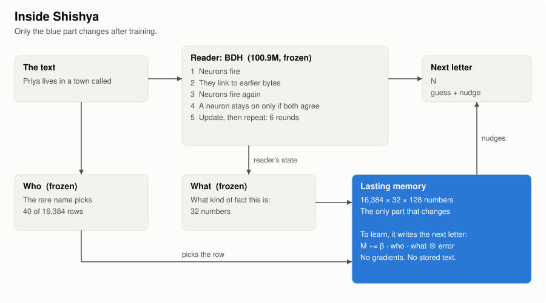

A neural network that keeps learning after training
Shishya reads a sentence once and knows it. No retraining, and no notes kept on the side. Here is how it works, in simple words, with things you can click.
The problem
A language model stops learning the day training ends. Tell it something new, and it's gone when the chat ends.
Train it again
Slow, and it damages what the model already knew.
Paste notes in (RAG)
Works well, but the model itself has learned nothing. It is reading its notes.
Shishya's try
Reading a fact changes lasting connections inside the model, like a brain.
Is it an LLM?
No GPT-style LLM is inside, and there's no LLM API or stored text. It's a neural network with a lasting memory. We trained our own 12.8M network from random weights, on 100M bytes of children's stories, in 6 hours on a free GPU. It only knows children's stories, so the latest version uses a bigger network of the same design, trained by someone else and shared for free. LLMs only appear outside the model, as baselines and in clearly labelled tests.
The ideas, in simple words
Hebbian learning: "fire together, wire together"
Brains learn without a teacher checking every connection. When two neurons fire at the same moment, the link between them gets stronger. Try it:
Links start weak. Press a button.
The key part is that each link changes using only what it can see locally. Normal training (backpropagation) sends an error signal back through the whole network and changes billions of numbers at once. Shishya's learning after training doesn't do that.
Delta rule: write only what's new
Plain Hebbian learning keeps adding. Shishya compares what the memory says now with what it just read, and writes only the difference. If it already knows a fact, almost nothing changes. If a value is new, it replaces the old one. You'll see this in the demo.
Surprise: write harder when surprised
You remember what surprises you. Shishya writes a letter harder when it didn't expect it. Expected text barely leaves a mark, so ordinary reading doesn't fill the memory.
Sparse: only a few fire at once
Only a few neurons, or memory rows, are active for any one thing. So facts about different people don't overwrite each other.
Frozen: most of it never changes
After training, the language part is locked. Only the lasting memory changes. That is why learning a new fact can't damage its language.
Birth: learning language from scratch
It starts with random weights and reads 100M bytes of children's stories, as raw bytes, with normal training (backprop).
Childhood: learning how to learn
One small part is trained on made-up people and other kinds of facts, so it learns how to use a memory. Then training stops for good.
Inside the reader: BDH
The part that knows English is BDH, a brain-like language model from Pathway. Where GPT passes dense lists of numbers, BDH uses 65,536 neurons that fire or stay silent. Step through what happens for one letter:
Neurons on an earlier letter
Neurons on this letter
A picture of the idea, with made-up dots. It isn't real activity.
Shishya's memory
BDH forgets everything when a text ends. Shishya adds the part that lasts.

To learn: the rare name picks a few rows, the meaning picks a spot in them, and it writes the next letter there.
To answer: the same name opens the same rows, and a similar meaning finds a nearby spot, even in other words. What's stored there nudges the next letter.
The whole learning rule fits on one line:
M[row] += strength · who(row) · what ⊗ (next letter − what the memory says now)
What we did
Eight versions in nine days on free hardware. Each plan and pass rule was written down before its test ran, and failures stayed on the record. Numbers are test results, choosing among 5 names, where guessing gets 20%.
- 27–29 Oct
A small rules library
Before the brain work: a library that returns the most likely answer that breaks no rule. It's still in the repo.
- 31 Oct
v1 and v2: BDH plus lasting links fail
It learned a little, then lost facts. Recall after 3 readings: 35%, then 67%.
- 31 Oct
v3: address by rare words learning passes
The same network with one change: where facts are written. 99% after 3 readings and 96% after one, against 14–22% for fine-tuned models. It failed only the speed rule, at 665 ms against 50 ms.
- 1 Nov
v4 and a hybrid on a real LLM fail
Facts stuck, but other wordings stayed at 27–35%. Around here we also tried two ideas from IBM's Larimar: forgetting on request, and protecting stored facts. The final model uses neither.
- 2 Nov
v5: who × what all rules pass
The breakthrough. Separate who a fact is about from what kind of fact it is. Other wordings jumped to 89.5–96.5%.
- 2 Nov
A harder exam, then v6 fail
Facts that change, and five facts in one sentence. Scores fell to 19–49%. But v6 lived a five-day life with its memory saved each day, and that test passed.
- 3 Nov
v7: a bigger reader, plus sleep fail
The 100M BDH. Changes stayed at 46%, so a bigger reader wasn't the fix. Sleep brought old values back, so it was left out. The five-day life passed again, with changed facts at 74% against 33% for RAG-3.
- 3 Nov
A side study: a self layer mixed
270 KB added to a frozen LLM gave it habits with no prompt text. Each habit passed alone. Real trivia and one layer holding many habits failed their rules.
- 3–4 Nov
v8 tests: a teacher at the door fail, by one question
A free LLM restates each sentence before it's stored. Changes rose to 69%, needing 70%. Unchanged facts reached 89%, and one sentence 50%. Only 12 people, so this is a first look.
- 4 Nov, latest
v8: hide replaced values fail, by two questions
Changes reached 85%, the best yet. But unchanged facts fell to 81%, needing 85%, and one sentence reached 60%, needing 80%. It still needs a free LLM at the door, and it was tested on only 12 people.
- 4 Nov
Published
Code, plans, raw results and failures, all open.
Where it stands
Works: learning from one reading, other wordings, a multi-day life. Doesn't yet: changes said in new words, many facts in one sentence, combining facts without thinking out loud. Should you use it instead of RAG? Not today. RAG ties or beats it on most tests, and its text is far smaller. It has only been tested on made-up names in simple sentences. Every known limit.
Try it
This toy runs in your browser and uses the same kind of write rule as Shishya, at a tiny size. Press the buttons in order, or type your own.
It's a toy, not the model. The real reader is replaced by a short word list, it stores whole words and not letters, and its failures are built to show the real ones. To run the real model, see below.
Memory rows. Outlined rows are the ones in use now. Blue rows hold something.
Kind of fact
How hard it wrote
Run the real model
It runs on a normal CPU, with no API key. The first run downloads a free 400 MB model, and answers take a few seconds per letter.
git clone https://github.com/sanattaori/shishya && cd shishya pip install torch numpy huggingface_hub python -m brain.teach --tour # what it can do, and what it can't python -m brain.teach # teach it yourself
Or open it in Colab.